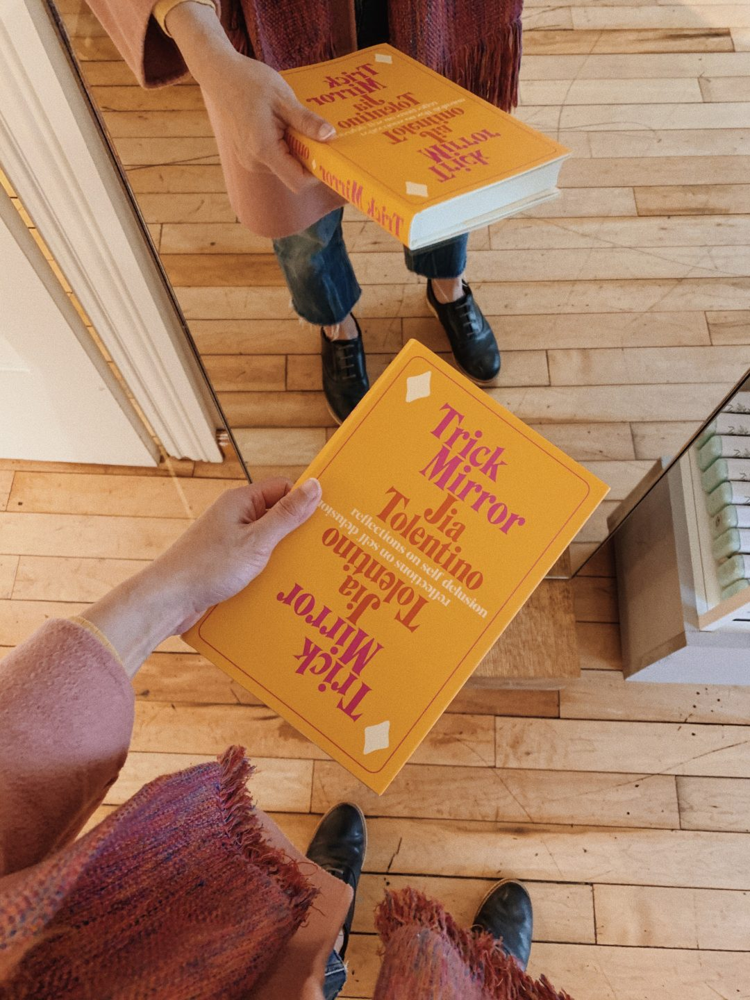

Book recap: Trick Mirror by Jia Tolentino

Published by Random House on 06 Aug 2019
Trick Mirror is an enlightening, unforgettable trip through the river of self-delusion that surges just beneath the surface of our lives. This is a book about the incentives that shape us, and about how hard it is to see ourselves clearly in a culture that revolves around the self. In each essay, Jia writes about the cultural prisms that have shaped her: the rise of the nightmare social internet; the American scammer as millennial hero; the literary heroine’s journey from brave to blank to bitter; the mandate that everything, including our bodies, should always be getting more efficient and beautiful until we die.
The I in the Internet
Tolentino asks how the internet got so bad—how it's gone from a place of pleasure to a place of increasing exhaustion—and identifies five intersecting problems:
"In real life, you can walk around living life and be visible to other people. But you can't just walk around and be visible on the internet—for anyone to see you, you have to act" (8). You must communicate an identity, for "the internet's central platforms are built around personal profiles" (8), but "to communicate an identity requires some degree of self-delusion" (13): "the self is not a fixed, organic thing, but a dramatic effect that emerges from a performance. This effect can be believed or disbelieved at will" (14).
- "Women—who, as John Berger wrote, have always been required to maintain an external awareness of their own identity—often navigate these online conditions so profitably. It's the self-calibration that I learned as a girl, as a woman, that has helped me capitalize on 'having' to be online. My only experience of the world has been one in which personal appeal is paramount and self-exposure is encouraged" (16)
1. "The internet is built to distend our sense of identity" (12)
- "As we move about the internet, our personal data is tracked, recorded, and resold by a series of corporations—a regime of involuntary technological surveillance, which subconsciously decreases our resistance to the practice of voluntary self-surveillance on social media... On social media platforms, everything we see corresponds to our conscious choices and algorithmically guided preferences" (14)
- "In physical space, there's a limited audience and time span for every performance. Online, your audience can hypothetically keep expanding forever, and the performance never has to end... there's essentially no backstage on the internet; where the offline audience necessarily empties out and changes over, the online audience never has to leave" (15)
2. "It encourages us to overvalue our opinions" (12)
- "In the absence of time to physically and politically engage with our community the way many of us want to, the internet provides a cheap substitute: it gives us brief moments of pleasure and connection, tied up in the opportunity to constantly listen and speak. Under these circumstances, opinion stops being a first step toward something and starts seeming like an end in itself" (18)
3. "It maximizes our sense of opposition" (12)
- "Within the economy of attention, conflict always gets more people to look" (22)
- "It is nearly impossible, today, to separate engagement from magnification" (25)
- "Brave contrarians [build] entire arguments on random protests and harsh tweets, making themselves deeply dependent on the people who hate them, the people they hate" (25)
4. "It cheapens our understanding of solidarity" (12)
- "But the internet brings the 'I' into everything. The internet can make it seem that supporting someone means literally sharing in their experience—that solidarity is a matter of identity rather than politics or morality, and that it's best established at a point of maximum vulnerability in everyday life" (26)
- "It's because of the hashtag, the retweet, and the profile that solidarity on the internet gets inextricably tangled up with visibility, identity, and self-promotion" (29)
5. "It destroys our sense of scale" (12)
- "This is not an accident but an essential design feature: social media was constructed around the idea that a thing is important insofar as it is important to you" (29)
- "The internet was dramatically increasing our ability to know about things, while our ability to change things stayed the same, or possibly shrank right in front of us" (31)
To put an end to the worst of the internet, we would have to "act on a model of actual selfhood, one that embraces culpability, inconsistency, and insignificance. We would have to think very carefully about what we're getting from the internet, and how much we’re giving in return. We'd have to care less about our identities, to be deeply skeptical of our own unbearable opinions, to be careful about when opposition serves us, to be properly ashamed when we can't express solidarity without putting ourselves first" (33).
Reality TV Me
Tolentino spent three weeks when she was sixteen filming a reality show called Girls v. Boys: Puerto Rico. She observes how the reality TV condition of documenting lives to be viewed has progressed through social media (51).
"Reality TV enacts the various self-delusions of the emotionally immature: the dream that you are being closely watched, assessed, and categorized; the dream that your life itself is movie material, and that you deserve your own carefully soundtracked montage when you’re walking down the street" (44).
When we document ourselves to be viewed, in an effort to present ourselves more honestly, we attempt to calibrate the external self to the internal self. The process has become so instinctive that it is sometimes "impossible to differentiate between the pretext for an experience, the record of that experience, and the experience itself" (48).
- "I worry that all this self-monitoring has made me...in danger of becoming a 'character to myself'" (45)
- "This is, I write, an attempt to be more honest: I want to act in a way that reflects how I feel; I want to live the way that I 'really am.' But I also worry that I’m more interested in narrative consistency than anything" (45)
Always Be Optimizing
Tolentino frames optimization as the pursuit of becoming the ideal woman (64) that coexists with mainstream feminism (65).
"[Mainstream feminism] has organized itself around being as visible and appealing to as many people as possible" (65).
- It "[conforms] to patriarchy and capitalism to become mainstream in the first place" (80)
- "Figuring out how to 'get better' at being a woman is a ridiculous and often amoral project—a subset of the larger, equally ridiculous, equally amoral project of learning to get better at life under accelerated capitalism" (66)
"When you are a woman, the things you like get used against you. Or, alternatively, the things that get used against you have all been prefigured as things you should like. Sexual availability falls into this category. So does basic kindness, and generosity. Wanting to look good—taking pleasure in trying to look good—does, too" (77).
- Work is rebranded as pleasure, becoming a matter of lifestyle (65); beauty is rebranded as self-care (80); self-improvement is not done for our husbands but for ourselves (81).
- "The default assumption tends to be that it is politically important to designate everyone as beautiful, that it is a meaningful project to make sure that everyone can become, and feel, increasingly beautiful. We have hardly tried to imagine what it might look like if our culture could do the opposite—de-escalate the situaton, make beauty matter less" (80)
- "Instead of being counseled by mid-century magazines to spend time and money trying to be more radiant for our husbands, we can now counsel one another to do all the same things but for ourselves" (81)
"The worse things get, the more a person is compelled to optimize" (66).
- "It's very easy, under conditions of artificial but continually escalating obligation, to find yourself organizing your life around practices you find ridiculous and possibly indefensible. Women have known this intimately for a long time" (68)
Pure Heroines
Tolentino is not satisfied with "the trajectory of literary women from brave to blank to bitter" (128).
"And surely part of what I love about childhood literary heroines is the way they remind me of...the time when I, already a complicated female character, wouldn’t hear the phrase 'complicated female character' for years. Those girls are all so brave, where adult heroines are all so bitter, and I so strongly dislike what has become clear since childhood: the facts of visibility and exclusion in these stories, and the way bravery and bitterness get so concentrated in literature, for women, because there’s not enough space for them in the real world" (97).
- "If you were a girl, and you were imagining your life through literature, you would go from innocence in childhood to sadness in adolescence to bitterness in adulthood—at which point, if you hadn’t killed yourself already, you would simply disappear" (95)
- "My hesitation, as an adult, to find myself within the heroine universe has been rooted in a suspicion that that identification would never be truly reciprocal: I would see myself in Jo March, but the world’s Jo Marches would rarely, if ever, be expected or able to see themselves in me" (127)
- "If women were not allowed to be seen as emblematic of the human condition, I wouldn't even get to be seen as emblematic of the female condition" (128)
- "Traditionally, male literary characters are written and received as emblems of the human condition" (118), and straight white female literary characters are written and received as emblems of the female condition (127)
But literary heroines can be "the base from which to become something more" (129).
- "The fact that the heroine's journey is framed as a default one for women is proof of our failure to see, for so long, that other paths were possible, and that many other ones exist" (128)
- "Difference was not the problem; it was the beginning of the solution" (129)
Ecstasy
Tolentino makes connections between drugs and religion.
"But still, each time, [ecstasy] can feel like divinity. It can make you feel healed and religious; it can make you feel dangerously wild. What's the difference? Your world realigns in a juddering oceanic shimmer. You feel that your soul is dazzling, delicate, unlimited; you understand that you can give the best of yourself away to everyone you love without ever feeling depleted" (148)
"I don’t know if I’m after truth or hanging on to its dwindling half-life. I might only be hoping to remember that my ecstatic disposition is the source of the good in me—spontaneity, devotion, sweetness—and the worst things, too: heedlessness, blankness, equivocation" (154)
The Story of a Generation in Seven Scams
Tolentino examines scamming as the definitive millennial ethos.
- "The con is in the DNA of this country, which was founded on the idea that it is good, important, and even noble to see an opportunity to profit and take whatever you can" (167)
- Millennials have been "raised from adolescence to this fragile, frantic, unstable adulthood on a relentless demonstration that scamming pays" (195)
1. The crash: "The financial crisis was a classic con—a confidence trick, carried off by confidence men" (165). People exploited others for their own financial safety.
- Mortgages were "extended to people who would never be able to pay them" (164).
2. The student debt disaster: "Colleges sell themselves as the crucible through which every young person must pass to stand a chance of succeeding" (170).
- The difference between housing debt and education debt is that "if you hope to improve your life in America, you can't quite turn away from a diploma the way you can a white picket fence" (168).
- As seen in the Operation Varsity Blues scandal, even "exorbitantly wealthy parents still place enough value in a college education that they will commit outright fraud in order to game the already rigged admissions system and give their children an education that they, of all people, do no actually need" (170).
- But while tuition is increasing, that money often goes towards improving facilities rather than the education students receive. "The institution's need to survive in the market, in other words, ends up hampering the student's ability to do the same after they graduate" (168).
3. The social media scam: Facebook exploits its users, selling our attention to advertisers and our personal data to market research firms.
- On social media, we "sell our identities in exchange for simply being visible" (174). It is done believing the personal brand can be a new path to stability.
- "The two most prominent families in politics and culture—the Trumps and the Kardashians—have risen to the top of the food chain because of their keen understanding of how little substance is required to package the self as an endlessly monetizable asset" (174).
4. The Girlbosses: This motivational personal branding provides "a feminist praxis of individual advancement and satisfaction—two concepts that easily blur into self-promotion and self-indulgence—[that] women happily bit" (178).
- "'I entered adulthood believing that capitalism was a scam, but I've instead found that it’s a kind of alchemy,' Amoruso writes. (Scams, of course, are also a kind of alchemy, spinning horseshit into gold.)" (176).
- "Instead of the structural supports and safety nets that would actually make women feel better on a systematic basis" (179), we got "the sort of self-congratulatory empowerment feminism that corporations can get behind, the kind that comes with merchandise—mugs that said 'Male Tears,' T-shirts that said 'Feminist as Fuck'" (178).
5. The really obvious ones: Billy McFarland/Fyre Fest, Anna Delvey, Elizabeth Holmes/Theranos, and more.
6. The disruptors: "Amazon ignored state sales taxes, Uber ignored local transportation regulations, and Airbnb ignored city laws against unregulated hotels" (187).
- "These companies' biggest breakthroughs have been successfully monetizing the unyielding stresses of late capitalism, shifting the need to compete from the company itself to the unprotected individual, and normalizing a paradigm in which workers and consumers bear the company's rightful responsibility and risk" (188).
- "At the other end of the venture-capital disruption spectrum are a bunch of companies that raked in heaps of money for doing nothing at all... These companies represent a socially approved version of millennial scamming: the dream of being a 'founder' who gets a dumb idea, raises a ton of money, and sells the company before he has to do too much work" (188).
7. The election: Trump is a lifelong scammer, profiting from false advertising, exploitation, and abuse.
- "And here one of the most soul-crushing things about the Trump era reveals itself: to get through it with any psychological stability—to get through it without routinely descending into an emotional abyss—a person's best strategy is to think mostly of himself, herself... The choice of this era is to be destroyed or to morally compromise ourselves in order to be functional—to be wrecked, or to be functional for reasons that contribute to the wreck" (193).
"People are so busy just trying to get back to zero, or trying to build up a buffer against disaster, or trying to enjoy themselves, because there's so little else to count on—three endeavors that could contain the vast majority of human effort until our depleted planet finally ends it all. And, while we do this—because we do this—the honest avenues keep contracting and dead-ending. There are fewer and fewer options for a person to survive in this ecosystem in a thoroughly defensible way" (194)
We Come from Old Virginia
As a University of Virginia alum, Tolentino reflects on institutional dismissal of sexual assault through the well intentioned but misguided, viral article "A Rape on Campus" by Sabrina Rubin Erdley in Rolling Stone that was discredited and retracted due to the false accusations reported.
- "Jackie's false accusation, in this context, appears as a sort of chimera—a grotesque, mismatched creation; a false way of making a real problem visible" (217)
"The best-case scenario for a rape victim in terms of adjudication is the worst-case scenario in terms of experience: for people to believe you deserve justice, you have to be destroyed... The truth about rape is that it's not exceptional. It's not anomalous. And there is no way to make that into a satisfying story" (230).
The Cult of the Difficult Woman
Tolentino examines how uncritical feminism flattens discourse.
"Feminists have worked so hard, with such good intentions, to justify female difficulty that the concept has ballooned to something all-encompassing: a blanket defense, an automatic celebration, a tarp of self-delusion that can cover up any sin" (252)
"Clinton's loss, which I will mourn forever, might reiterate the importance of making space for the difficult woman. It might also point toward the way that valuing a woman for her difficulty can, in ways that are unexpectedly destructible, obscure her actual, particular self. Feminist discourse has yet to fully catch up to the truth that sexism is so much more mundane than the celebrities who have been high-profile test cases for it. Sexism rears its head no matter who a woman is, no matter what her desires and ethics might be. And a woman doesn’t have to be a feminist icon to resist it—she can just be self-interested, which is not always the same thing" (262)
I Thee Dread
Tolentino examines the gender inequality entrenched in heterosexual marriage.
"[The cultural psychosis] tells women to cram a lifetime's supply of open self-interest into a single, incredibly expensive day" (281).
- "This is of course not the case for everyone, but for plenty of women, becoming a bride still means being flattered into submission: being prepared, through a rush of attention and a series of gender-resegregated rituals—the bridal shower, the bachelorette party, and, later, the baby shower—for a future in which your identity will be systematically framed as secondary to the identity of your husband and kids" (290)
- "I don't want to be diminished, and I do want to be glorified—not in one shining moment, but whenever I want" (291)
Book review here